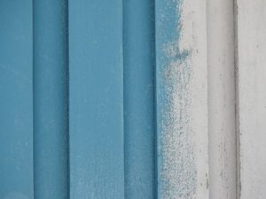
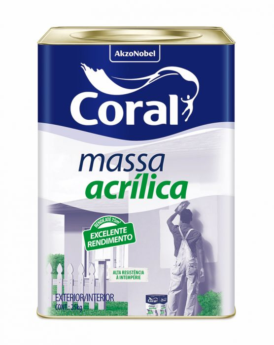
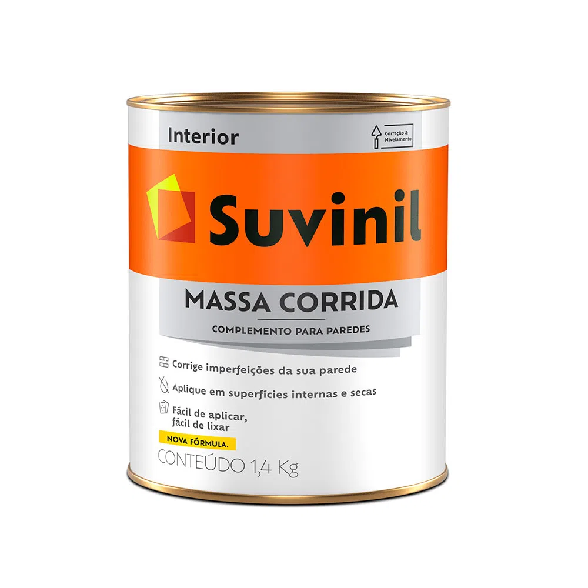

O universo das tintas para pintar a parede é amplo, além da infinidade de cores, e também há uma grande variedade de acabamentos e modelos. Com algumas dicas simples, é possível esclarecer as dúvidas sobre o assunto e garantir ambientes lindos. Por isso, listamos informações importantes para ajudar nesta escolha:
-
Tinta Acrílica
Ideal para paredes de alvenaria, a tinta acrílica funciona bem em ambientes internos e externos. Existem três acabamentos disponíveis: acetinado, semi-brilho e fosco. O material é de fácil lavagem, basta um pano úmido para fazer a higienização diminuindo a necessidade de manutenção.

-
Tinta Látex PVA
Ideal para tetos e paredes, esta é a escolha de muitos que precisam pintar a parte interna de suas residências. O nome PVA vem da substância utilizada para fabricação da tinta látex, o Acetato de Polivinila. Essa tinta é solúvel em água, sendo uma das prediletas entre os pintores.

-
Massa Acrílica
Perfeita para dar um acabamento mais uniforme para a parede, a massa acrílica é um produto que não pode faltar na sua reforma. Seu uso garante uma superfície pronta para receber a tinta, corrigindo qualquer imperfeição que possa atrapalhar a pintura.
 -
Massa Corrida
Essencial na pintura, a massa corrida é o produto utilizado para preparar as paredes. Também conhecida como massa corrida PVA ou massa PVA, ela é importante para corrigir as imperfeições e deixar as superfícies lisas e prontas para receber a tinta.
